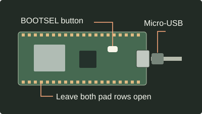
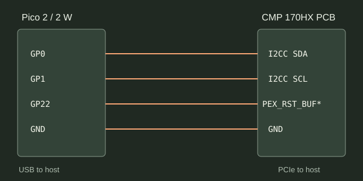

01 / 05 • Hardware
Identify your board
Read the model printed on your Pico. This step installs USB diagnostics. The glitch research workflow is in step 6. Both boards use the RP2350 bootloader ID, so the printed label determines which image to install.
What needs soldering?
No soldering is needed for USB diagnostics or GPU inspection. Leave the Pico’s two rows of pads bare. If yours has headers installed, leave them in place with the pins disconnected. The USB cable supplies power and data.
Photos © Raspberry Pi Ltd. Image credits
02 / 05 • USB connection
Connect in BOOTSEL

- Disconnect the Pico and place it on a nonconductive surface with the component side up. Locate the Micro-USB socket and BOOTSEL button.
- Hold down the white BOOTSEL button beside the USB connector. Plug the Pico directly into the host with a USB data cable, then release the button.
- Look for a drive named
RP2350containingINFO_UF2.TXT. Keep only the intended Pico attached during the transfer.
Read the bootloader identity
The USB picker can record the chip serial for comparison after reboot. Select the RP2350 in the picker.
Waiting for a bootloader.
No USB picker or mounted volume?
Use desktop Chrome or Edge on HTTPS or localhost for WebUSB. The file-copy method also works without a picker. On Ubuntu, open RP2350 in Files or run lsusb -d 2e8a:000f. If neither finds it, retry BOOTSEL with a known data cable.
03 / 05 • Pico firmware
Install diagnostics
The UF2 replaces the program on the Pico. Save any previous image and application data you want to keep. The GPU stays in its normal PCIe slot.
Choose a board in step 1
USB diagnostics 1.0.0 · 42,496 bytes
Image SHA-256
Choose a board to see its checksum.- Download the matching UF2 to your computer. The guide checks the file’s SHA-256 before offering it.
- In your file manager, copy that UF2 to the identified RP2350 volume. The copy starts the Pico flash.
- Keep USB connected. The boot volume normally disappears when the Pico reboots. Continue to verify the running image.
04 / 05 • Runtime check
Verify the Pico
After reboot, open the picker again and select the diagnostic device. The guide checks its board target and firmware version, then compares its serial with the one read in BOOTSEL.
Waiting for a runtime device.
Verify from Ubuntu
Run lsusb -v -d 2e8a:0009 or ga100ctl --json pico list. Check the same serial and look for ga100ctl/BOARD/1.0.0 in the product string. A generic USB serial device alone is insufficient evidence.
The Pico did not return
Unplug and reconnect it normally, then inspect the USB listing again. To recover a prior application, enter BOOTSEL and copy your saved board-compatible UF2 to RP2350.
05 / 05 • GPU inventory
Inspect your card
On the Ubuntu host with the CMP 170HX installed and cooled, record its identity before any changes. This toolkit reads the GPU through PCIe. Its firmware images target the Pico only.
Check the card connection
The card communicates with the host through its PCIe edge connector. Leave the GPU PCB and heatsink intact, with the Pico connected only to host USB. If you need to seat the card or connect its specified auxiliary power, shut down and disconnect host power first. Provide airflow through the passive heatsink before powering up.
Install the host tool
Download the ga100ctl 0.1.0 wheel. In its download directory, run these commands with Python 3.10 or newer.
python3 -m venv .venv
. .venv/bin/activate
python -m pip install ./ga100ctl-0.1.0-py3-none-any.whl
ga100ctl doctor
ga100ctl gpu listCapture the baseline
Replace PCI_ADDRESS with the full address from the listing. Save the reported card ID, event ID and physical label together. If the driver supplies no stable identifier, include --asset-tag YOUR_LABEL on each inspection.
ga100ctl gpu inspect --gpu PCI_ADDRESS
ga100ctl --json report --card CARD_ID > baseline.jsonThe research workflow for voltage glitching and persistent configuration is in the next step.
06 / 06 • Research workflow
GA100 voltage glitch
The published Pico project uses four signals to put a CMP 170HX into a temporary fuse-control state. Its author reports testing the glitch on one card. The diagnostic UF2 from this guide only identifies the Pico and cannot drive these signals.
Original sources
Kate’s GA100 voltage glitch research explains the fuse controller, the unlock sequence and measured outcomes.
Kate’s ga100vfi repository contains her original hardware and software work.
DaLZy’s Raspberry Pi Pico port supplies the Pico wiring, glitch firmware and host campaign described below.
Raspberry Pi Pico SDK 2.2.0 builds the USB diagnostic firmware offered in this guide.
What the glitch changes
At power-on reset, GA100 senses its fuse block. The Pico firmware sends PMBus commands over the GPU’s I²C bus to the MP2888B voltage controller. It times an NVVDD dip against the PEX_RST release edge. A suitable dip can make control fuses read as unburned, leaving DSOV = 0 and the shadow registers accessible for that boot. This is the voltage fault injection described by Kate and implemented for Pico by DaLZy.
Four stages of the configuration change
- Glitch to Goldilocks
Run
campaignwith the Pico connected to the card. The host checks forDSOV = 0, a valid fuse CRC and open privilege masks. This stage opens the temporary control window. Save the card-specific verdict and waveform evidence. - Arm fuse programming
With
DSOV = 0held, re-sense the control fuses to recover fuse-program enable, then enable software override and clear the write and burn locks in the shadow option registers. The Pico campaign does not perform this stage. Kate’s research describes the register work. - Append fuseless-fuse records
Read this die’s defect masks first. Select only functional HBM stacks, SMs, PCIe and NVLink resources, and FP capabilities. Append new FF records to blank one-time-programmable rows. When records address the same block, the last one wins during replay. Existing burned rows remain intact. This is a permanent operation whose values must come from the individual card.
- Power cycle and verify
Fully power cycle the card so the controller replays the new FF chain at boot. Reinspect the card and measure usable memory, compute stability and link behavior. Compare with the original baseline before describing any capability as unlocked.
Identify and baseline the card
Read the printed card label, record its PCI address and current driver measurements in the inspection step. Kate observed different results among nominally identical specimens.
Locate the four signals
Use the annotated PCB photo below with the component side facing you. It marks three solder pads near U808 and U809. Match each marked GPU pad to the labeled Pico GPIO pad.
| Pico pad | GPU solder point in the photo |
|---|---|
GP0 | I2CC_SDA, the round pad above and to the right of U808 |
GP1 | I2CC_SCL, the round pad below and to the left of U808 |
GP22 | PEX_RST_BUF*, the round pad beside U809 on the right |
GND | A verified GPU ground point. The source photo does not designate a particular ground solder pad. |
Check that your PCB matches the pictured component layout before soldering. Leave Pico 3V3 and VBUS disconnected from the GPU.


.png){kind=link}
With all power removed, attach insulated, strain-relieved wires. Check each connection and adjacent pads before power-up. The upstream project calls for a direct PEX_RST wire.
Build the Pico glitch firmware
Use the upstream build guide for your exact board and copy its UF2 in BOOTSEL. The UF2 offered earlier on this site is USB diagnostics firmware. The pinned upstream Pico 2 W board-family setting conflicts with Raspberry Pi’s official board definition, so confirm the build target before attaching it to the GPU.
Run the campaign
The Pico and card connect to the same Ubuntu host. The upstream host client needs the NVIDIA driver unloaded so it can access BAR0. Follow its adaptive campaign guide and use your card’s PCI address.
sudo python3 -m ga100vfi campaign --bdf YOUR_PCI_ADDRESS --adaptive

Study the fuse state
A successful campaign reports a temporary “Goldilocks” state. The four-stage sequence above shows what comes afterward. Kate’s article explains how she inspected each die’s defects and appended fuseless-fuse records for a persistent change. Record that specimen’s masks and outcome. Another card’s mask cannot establish which units work on yours.
Measure the result
After a power cycle, repeat the inspection and validate memory and compute under load. Compare measured usable capacity, SM count, PCIe behavior and errors with your original baseline. The verification notes describe what each check establishes.